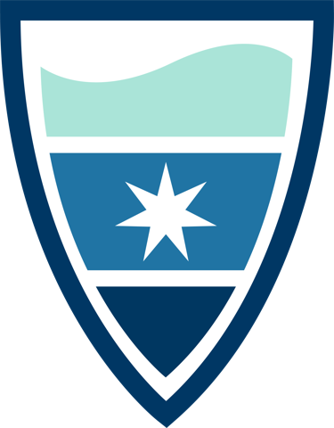

Package index
-
create_expedition() - Create New Pristine Seas Expedition Structure
-
create_expedition_readme() - Create Expedition README Template
-
create_project() - Create New Pristine Seas Project Structure
-
ps_science_paths()get_drive_paths() - Find the Pristine Seas SCIENCE folder on this machine
-
ps_researchers - Scientists Lookup Table
Vocabularies and validation
The controlled vocabularies survey data must follow, and the tools that hold it to them.
-
allowed_vocab - Allowed Vocabularies
-
validate_vocab() - Validate Values Against Allowed Vocabularies
-
clean_field_names() - Clean Taxonomic Field Names from Benthic LPI Surveys
-
validate_and_export_csv() - Validate a Data Frame's Columns Against a BigQuery Table, Then Export to CSV
-
stratify() - Stratify Depths into Standard Categories
-
station_suffix() - Get Station Suffix from Depth Strata
Exploration maps
Interactive maps of a survey while the expedition is still at sea. One design, every protocol.
-
explore_uvs_sites() - Build the Interactive UVS Sites Map (Color-By Region/Subregion/Habitat/Exposure)
-
explore_fish_biomass() - Build the Interactive Fish Survey Results Map (Metric Toggle by Site)
-
explore_benthic_cover() - Build the Interactive Benthic Cover Map (Pie Charts by Site)
-
explore_invert_density() - Build the Interactive Invertebrate Survey Results Map (Metric Toggle by Site)
-
explore_recruit_density() - Build the Interactive Recruit Density Map (Circle Markers by Site)
-
default_benthic_cover_groups() - Standard Benthic Cover Groups for
explore_benthic_cover()
-
map_uvs_sites() - Map underwater visual survey sites
Satellite detections
Global Fishing Watch vessel detections, each with the imagery it was made from.
-
explore_s1_detections() - Explore Sentinel-1 detections
-
explore_s2_detections() - Explore Sentinel-2 Vessel Detections, With The Imagery Behind Each One
-
ee_connect() - Connect to Google Earth Engine
Figures and tables
One design in two inks. Charts on paper, maps on water, and the house table styles.
-
theme_ps() - Pristine Seas chart theme
-
theme_ps_map() - Pristine Seas map theme
-
ps_ink()ps_theme_colors() - The Ink Behind The Themes
-
ps_font_default() - The Pristine Seas house typeface
-
guide_ps_colourbar() - A colourbar proportioned for Pristine Seas figures
-
gt_theme_ps() - Pristine Seas gt Theme for Summary Tables
-
gt_theme_ps_light()light_gt() - The Light, Compact Pristine Seas gt Style
-
ps_colors() - Get Pristine Seas colors
-
ps_habitat_colors() - Assign the habitat palette to the habitats a trip sampled
-
ps_show_palette() - Preview a Pristine Seas palette
-
scale_fill_ps() - Discrete fill scale using Pristine Seas palettes
-
scale_color_ps() - Discrete color scale using Pristine Seas palettes
-
ps_shapes() - Get Pristine Seas shapes
-
scale_shape_ps() - Discrete shape scale using Pristine Seas shape palettes
-
get_crw_dhw_bbox() - Fetch NOAA CRW DHW (Degree Heating Week) for a bounding box (bbox)
-
get_crw_dhw_sf() - Fetch NOAA CRW DHW for an
sffeature's bounding box -
get_taxonomic_ranks() - Get Higher Taxonomic Ranks from WoRMS by AphiaID
-
rmi_2023_uvs_sites - Underwater visual survey sites of the 2023 Marshall Islands expedition
-
rmi_2023_uvs_blt_stations - Fish belt-transect stations of the 2023 Marshall Islands expedition
-
PristineSeasR2PristineSeasR2-package - PristineSeasR2: The Science Toolkit of National Geographic Pristine Seas